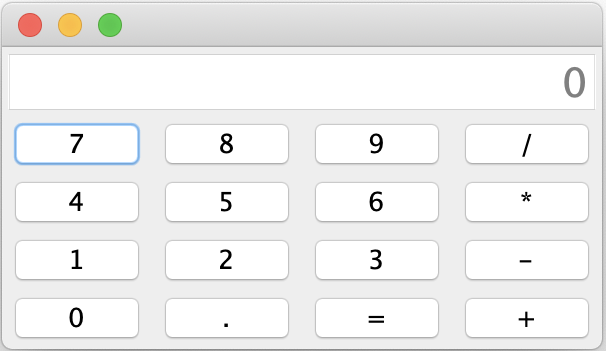
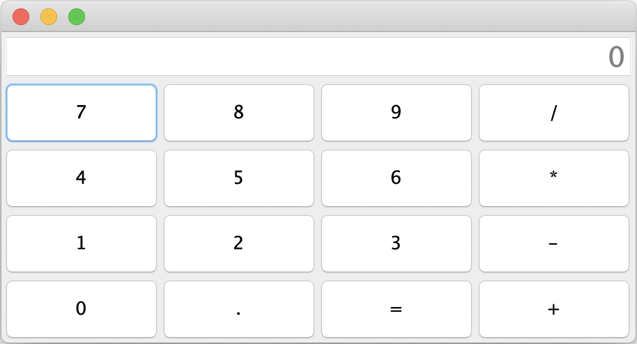

Potrebno je napraviti kalkulator koji izgleda kao na sljedećim slikama:


Razlika izmađu slika je u veličini tj. koliko smo rastegnuli prozor.
Sve je potrebno implementirati u klasi Calculator koja se nalazi u paketu hr.fer.oop.zi.z4.
Napomena: U predložku su označena mjesta s komentarom // TODO ... koja treba nadopuniti.
U gornjem dijelu aplikacije nalazi ispis rezultata i ispis onoga što je uneseno (JTextField). U srednjem dijelu je panel s gumbima.
U metodi setupLayout klase Calculator kreirajte grafičko sučelje prikazano na slikama. Za layoute možete koristiti klase FlowLayout, GridLayout i BoarderLayout.
Također je potrebno definirati ponašanje za sve gumbe u metodi registerListeners. Kada se pritisne gumb s brojem ili decimalnom točkom pozove se metoda numberPressed, a kada se pristisnu operatori ili jednako onda se pozove metoda operatorPressed.
U metodi numberPressed je potrebno potrebno napraviti logiku unosa broja. Ako je na početnu ispisana 0 i pritisne se točka onda se ispisuje 0. i nakon toga se mogu pritiskati ostale znamenke koje se nadodaju na kraj. Ako je na početku 0 i pritisne se neka znamenka onda se ispis zamjenjuje s tom znamenkom npr. ako je bilo 0 i pritisnemo 5 onda se ispisuje 5. Nakon toga možemo dodavati ostale znamenke.
U metodi operatorPressed se obrađuju operatori i pritisak na jednako. Nakon unosa broja pritisne se operator i nakon toga se upisuje drugi broj. Tek kada se pritisne jednako onda se računa razultat i ispisuje. Nakon jednako možemo ili krenuti unositi novi broj ili možemo pritisnuti operator pa je onda taj broj prvi operand.
U kalkulator se mogu unostiti i složene operacije npr. 5 + 4 - 1 = što će prvo izračunati 5 + 4 i od tog rezultata oduzeti 1 te na kraju ispiati 8.
U klasu Calculator slobodno možete dodavati atribute/članske varijable i privatne metode po potrebi.